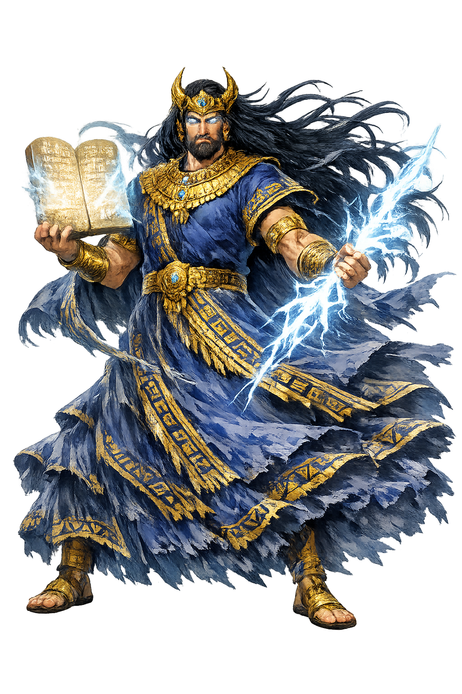

Visual Legacy
Phonological Reconstruction, Wind, Air, Storms, Kingship

Enlīl through the eyes of sculptors, painters, and craftsmen across the ages

Baked-clay statuette of the god Enlil seated, from the Scribal Quarter at Nippur, Iraq, c. 1800–1600 BCE. Traces of red and black paint remain; the clenched left fist once held an object. Iraq Museum, Baghdad.

Kassite-period kudurru (boundary stone) from Iraq, 15th–11th century BCE, carved with divine symbols including the horned crown of Enlil, along with Sin, Ishtar, Shamash, Anu, and the goddess Gula. Iraq Museum, Baghdad.

Ruins of a temple at Naffur (ancient Nippur), Iraq — the cult center of Enlil, where Sumerian gods were said to meet. U.S. Army photo by Jasmine N. Walthall.

Bronze foundation figurine of King Ur-Nammu, c. 2112–2095 BCE, from Nippur. The king carries a basket of clay on his head, commemorating his rebuilding of the E-kur temple of Enlil. Iraq Museum, Baghdad.

Achaemenid cylinder seal (chalcedony, c. 550–330 BCE) showing a king wearing the horned crown — the primary iconographic symbol of Enlil and Mesopotamian divinity. Walters Art Museum, Baltimore.

The Adda Seal, an Akkadian cylinder-seal impression from c. 2300 BCE, British Museum. It depicts the divine assembly of major Mesopotamian gods over whom Enlil presided as supreme deity.